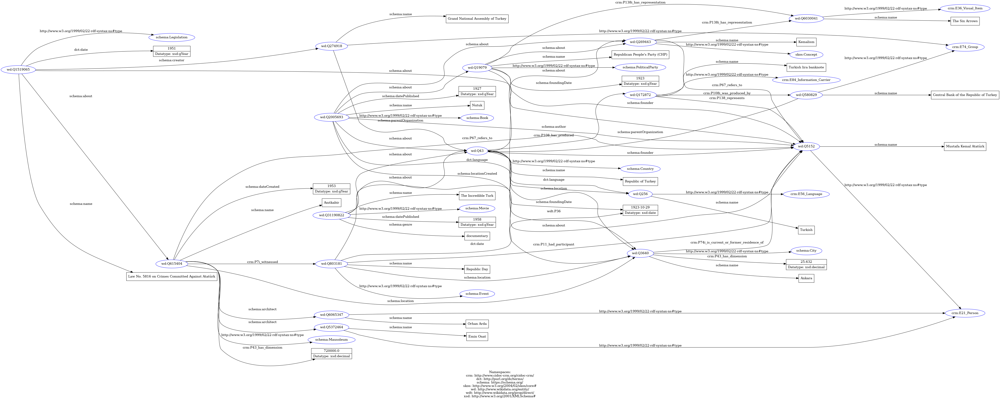

Knowledge Representation
This page shows how the project turns text and tables into one RDF graph. The TEI document is the core: the entities and relations stated in the text are taken from it, the extra entities are added from CSV tables, and everything is merged into a single dataset that follows the conceptual model exactly.
- TEI/XML — the source text with the entities annotated.
- TEI → HTML (XSLT) — a readable web version of the text.
- TEI → RDF (Python) — the data stated in the text.
- CSV → RDF (Python) — the extra data not in the text.
- Merge (Python) — the two RDF parts joined into one graph.
1. TEI/XML document
The TEI file encodes short excerpts from the Wikipedia article on Atatürk. It
has two parts. The body keeps the logical structure of the
text (sections, headings, paragraphs) and annotates each of the ten entities
where it appears — using <persName>,
<placeName>, <orgName>,
<title> and <rs>. Quotations are marked
with <quote> as a textual phenomenon.
The header holds a record for every entity, grouped by type
(<listPerson>, <listPlace>,
<listOrg>, <listEvent>,
<listObject>, <listBibl>, and a
<taxonomy> for the concept). Each record is reconciled to an
authority file (Wikidata, plus VIAF and
GeoNames where available). Finally, a
<listRelation> records the relations between entities that
the text states.
Show codeencoding.xml
<?xml version="1.0" encoding="UTF-8"?>
<TEI xmlns="http://www.tei-c.org/ns/1.0">
<teiHeader>
<fileDesc>
<titleStmt>
<title>Mustafa Kemal Atatürk in Cultural Heritage</title>
<author>Kübra Topçuoğlu</author>
</titleStmt>
<publicationStmt>
<p>Information Science and Cultural Heritage course project, 2026.</p>
</publicationStmt>
<!-- Source of the text + records for textual/bibliographic works
(book, film, legislation). Each gets a Wikidata id for reconciliation. -->
<sourceDesc>
<bibl>Text excerpts from the Wikipedia article "Mustafa Kemal Atatürk",
<ref target="https://en.wikipedia.org/wiki/Mustafa_Kemal_Atat%C3%BCrk">en.wikipedia.org</ref>.</bibl>
<listBibl>
<!-- Entity 5: Nutuk (book written by Atatürk) -->
<bibl xml:id="nutuk">
<author ref="#ataturk">Mustafa Kemal Atatürk</author>
<title>Nutuk</title>
<date when="1927">1927</date>
<textLang mainLang="tr">Turkish</textLang>
<idno type="Wikidata">http://www.wikidata.org/entity/Q2005693</idno>
</bibl>
<!-- Entity 6: The Incredible Turk (documentary film about Atatürk) -->
<bibl xml:id="incredible_turk" type="film">
<title>The Incredible Turk</title>
<date when="1958">1958</date>
<note>Documentary film about Mustafa Kemal Atatürk.</note>
<idno type="Wikidata">http://www.wikidata.org/entity/Q31190822</idno>
</bibl>
<!-- Entity 10: Law No. 5816 (legislation protecting Atatürk's memory) -->
<bibl xml:id="law_5816" type="legislation">
<title>Law No. 5816 on Crimes Committed Against Atatürk</title>
<date when="1951">1951</date>
<note>Legislation protecting the memory of Atatürk.</note>
<idno type="Wikidata">http://www.wikidata.org/entity/Q1519065</idno>
</bibl>
</listBibl>
</sourceDesc>
</fileDesc>
<encodingDesc>
<!-- Entity 9: Kemalism, modelled as a concept in a TEI taxonomy -->
<classDecl>
<taxonomy xml:id="concepts">
<!---<taxonomy> → a classification scheme (a list of categories/concepts)-->
<category xml:id="kemalism">
<catDesc>Kemalism — the founding ideology based on the principles of
<persName ref="#ataturk">Atatürk</persName>.</catDesc>
<!--<catDesc> → the text that describes what that category means-->
<idno type="Wikidata">http://www.wikidata.org/entity/Q269443</idno>
</category>
</taxonomy>
</classDecl>
</encodingDesc>
<profileDesc>
<particDesc>
<!-- People: the main subject (Atatürk) and people from the source text.
Support entities (e.g. Anıtkabir's architects) are NOT here because
they are not mentioned in the body text; they live in the CSV files. -->
<listPerson>
<person xml:id="ataturk">
<persName>Mustafa Kemal Atatürk</persName>
<addName type="nickname">Father of the Turks</addName>
<birth when="1881"/>
<death when="1938-11-10"/>
<idno type="Wikidata">http://www.wikidata.org/entity/Q5152</idno>
<idno type="VIAF">https://viaf.org/viaf/87758727</idno>
</person>
</listPerson>
<!-- Places: cities and the mausoleum (entities 3 and 8 + source places). -->
<listPlace>
<!-- Entity 8: Ankara (capital city) -->
<place xml:id="ankara" type="city">
<placeName>Ankara</placeName>
<note>Capital of Turkey since 1923.</note>
<idno type="Wikidata">http://www.wikidata.org/entity/Q3640</idno>
<idno type="GeoNames">https://sws.geonames.org/323786/</idno>
</place>
<!-- Entity 3: Anıtkabir (mausoleum of Atatürk) -->
<place xml:id="anitkabir" type="mausoleum">
<placeName>Anıtkabir</placeName>
<note>Mausoleum of Atatürk in Ankara.</note>
<idno type="Wikidata">http://www.wikidata.org/entity/Q615404</idno>
</place>
</listPlace>
<!-- Organisations / groups from the source text (state, party, ...).
Support institutions (assembly, central bank) are not mentioned in the
body text, so they are kept only in the CSV files. -->
<listOrg>
<!-- Entity 1: Republic of Türkiye -->
<org xml:id="turkey" type="country">
<orgName>Republic of Turkey</orgName>
<date type="founded" when="1923-10-29">29 October 1923</date>
<idno type="Wikidata">http://www.wikidata.org/entity/Q43</idno>
</org>
<!-- Entity 2: CHP (party founded by Atatürk) -->
<org xml:id="chp" type="political_party">
<orgName>Republican People's Party (CHP)</orgName>
<date type="founded" when="1923">1923</date>
<idno type="Wikidata">http://www.wikidata.org/entity/Q19079</idno>
</org>
</listOrg>
<!-- Entity 7: Republic Day (recurring event, 29 October). -->
<listEvent>
<event xml:id="republic_day" when="--10-29">
<label>Republic Day</label>
<desc>Annual celebration of the proclamation of the Republic on 29 October 1923.</desc>
<idno type="Wikidata">http://www.wikidata.org/entity/Q803181</idno>
</event>
</listEvent>
<!-- Entity 4: Turkish lira banknote (physical object bearing his portrait). -->
<listObject>
<object xml:id="tl_banknote">
<objectIdentifier>
<objectName>Turkish lira banknote</objectName>
</objectIdentifier>
<note>Banknote bearing the portrait of
<persName ref="#ataturk">Atatürk</persName>.</note>
<idno type="Wikidata">http://www.wikidata.org/entity/Q172872</idno>
</object>
</listObject>
<!-- Relations between entities. Only relations actually stated in the body
text are kept here; relations NOT in the text (architect, issuer, ...)
live in the CSV files. Identical triples merge later in RDF. -->
<listRelation>
<!-- "Immortalisation" relations supported by the annotated snippets -->
<relation name="founder" active="#turkey" passive="#ataturk"/>
<relation name="founder" active="#chp" passive="#ataturk"/>
<relation name="represents" active="#tl_banknote" passive="#ataturk"/>
<relation name="about" active="#incredible_turk" passive="#ataturk"/>
<relation name="author" active="#nutuk" passive="#ataturk"/>
<relation name="refers_to" active="#anitkabir" passive="#ataturk"/>
<relation name="refers_to" active="#kemalism" passive="#ataturk"/>
<relation name="about" active="#law_5816" passive="#ataturk"/>
<relation name="location" active="#anitkabir" passive="#ankara"/>
<relation name="capital" active="#turkey" passive="#ankara"/>
<relation name="about" active="#turkey" passive="#kemalism"/>
<relation name="location" active="#republic_day" passive="#ankara"/>
</listRelation>
</particDesc>
</profileDesc>
</teiHeader>
<text>
<body>
<!-- The body holds short Wikipedia excerpts. Every one of the 10 entities is
mentioned and annotated with the matching element + @ref to its header id:
person -> persName | place -> placeName | org -> orgName
work -> title | event -> rs/@type="event"
object -> rs/@type="object" | concept -> rs/@type="concept"
Quotations are marked with <quote> (a "textual phenomenon"). -->
<div type="biography">
<head>Life</head>
<p>
<persName ref="#ataturk">Mustafa Kemal Atatürk</persName>
(c. 1881 – 10 November 1938) was a Turkish field marshal and statesperson who was the
founder of the <orgName ref="#turkey">Republic of Turkey</orgName> and served as its
first president from 1923 until his death in 1938.
</p>
</div>
<div type="work">
<head>Nutuk</head>
<p>
His most famous text, <title ref="#nutuk">Nutuk</title> [Speech], was published by the
Turkish Aeronautical Association in <placeName ref="#ankara">Ankara</placeName> in 1927.
One of his best-known maxims is <quote>"Peace at Home, Peace in the World"</quote>.
</p>
</div>
<div type="mausoleum">
<head>Anıtkabir</head>
<p>
<persName ref="#ataturk">Atatürk</persName>'s remains were originally laid to rest in the
Ethnography Museum of <placeName ref="#ankara">Ankara</placeName>, but they were transferred
on 10 November 1953 to a mausoleum overlooking Ankara,
<placeName ref="#anitkabir">Anıtkabir</placeName>.
</p>
</div>
<div type="currency">
<head>Banknotes</head>
<p>
His face and name are seen everywhere in <orgName ref="#turkey">Turkey</orgName>; his
portrait can be seen in public buildings, in schools, on all
<rs type="object" ref="#tl_banknote">Turkish lira banknotes</rs>, and in the homes of many
Turkish families.
</p>
</div>
<div type="film">
<head>The Incredible Turk</head>
<p>
<title ref="#incredible_turk">The Incredible Turk</title> is a documentary film about
<persName ref="#ataturk">Kemal Atatürk</persName> and the modernization of the Turkish Republic.
</p>
</div>
<div type="commemoration">
<head>Republic Day</head>
<p>
<placeName ref="#anitkabir">Anıtkabir</placeName>, the mausoleum of
<persName ref="#ataturk">Atatürk</persName> in <placeName ref="#ankara">Ankara</placeName>,
is visited by large crowds every year during national holidays such as
<rs type="event" ref="#republic_day">Republic Day</rs> on 29 October.
</p>
</div>
<div type="capital">
<head>Capital</head>
<p>
In forging the new republic, the Turkish revolutionaries made
<placeName ref="#ankara">Ankara</placeName> the country's new capital, turning away from
cosmopolitan Constantinople and its Ottoman heritage.
</p>
</div>
<div type="ideology">
<head>Kemalism</head>
<p>
This defining ideology of the <orgName ref="#turkey">Republic of Turkey</orgName> is referred
to as the "Six Arrows", or <rs type="concept" ref="#kemalism">Kemalism</rs>.
<rs type="concept" ref="#kemalism">Kemalism</rs> is based on
<persName ref="#ataturk">Mustafa Kemal</persName>'s conception of realism and pragmatism.
</p>
</div>
<div type="party">
<head>Republican People's Party</head>
<p>
At a private meeting of the <orgName ref="#chp">Republican People's Party (CHP)</orgName>,
<persName ref="#ataturk">Mustafa Kemal</persName> expressed his fear of being among the
minority in his own party. After the majority of the CHP chose him, he said:
<quote>"the Turkish nation is firmly determined to advance fearlessly on the path of the
republic, civilization and progress."</quote>
</p>
</div>
<div type="law">
<head>Law No. 5816</head>
<p>
In 1951 the Turkish parliament issued the
<title ref="#law_5816">Law on Crimes Committed Against Atatürk</title>, outlawing insults to
the memory of <persName ref="#ataturk">Atatürk</persName> and the destruction of objects
representing him.
</p>
</div>
</body>
</text>
</TEI>
2. TEI → HTML (XSLT)
The TEI/XML file keeps the content and its annotations in a structured form that is meant for processing, not for direct reading. The point of this step is to turn that same source into a page a person can actually read, without copying or rewriting the text by hand: the content stays in the TEI file and only its presentation is generated. It also lets a reader check the encoding work, since the tagged entities become visible in the output.
An XSLT stylesheet reads the TEI file and produces a simple HTML page. Section
headings become <h2>, paragraphs become
<p>, and the annotated entities are shown in bold so the
reader can see which words were tagged. It is run with
xsltproc tei_to_html.xsl encoding.xml > encoding.html.
The HTML output is encoding.html.
Show codetei_to_html.xsl
<?xml version="1.0" encoding="UTF-8"?>
<!-- ============================================================
TEI -> HTML transformation
This stylesheet reads the TEI file (encoding.xml) and turns it
into a simple, readable HTML web page (encoding.html).
Run it with: xsltproc tei_to_html.xsl encoding.xml > encoding.html
============================================================ -->
<xsl:stylesheet version="1.0"
xmlns:xsl="http://www.w3.org/1999/XSL/Transform"
xmlns:tei="http://www.tei-c.org/ns/1.0">
<!-- We want HTML (not XML) as the final output, encoded in UTF-8. -->
<xsl:output method="html" encoding="UTF-8" indent="yes"/>
<!-- ============================================================
MAIN TEMPLATE: matches the root <TEI> element.
It builds the whole HTML page skeleton (html/head/body).
============================================================ -->
<xsl:template match="/tei:TEI">
<html>
<head>
<!-- The page <title> is taken from the TEI <title> in the header. -->
<title><xsl:value-of select="tei:teiHeader//tei:titleStmt/tei:title"/></title>
<!-- A tiny bit of styling so the annotated entities stand out. -->
<style>
body { font-family: sans-serif; max-width: 700px; margin: 40px auto; line-height: 1.6; }
.entity { font-weight: bold; }
.quote { font-style: italic; color: #555; }
</style>
</head>
<body>
<!-- Big page heading = the TEI title. -->
<h1><xsl:value-of select="tei:teiHeader//tei:titleStmt/tei:title"/></h1>
<!-- Now process the text body (the divs with the Wikipedia excerpts). -->
<xsl:apply-templates select="tei:text/tei:body"/>
</body>
</html>
</xsl:template>
<!-- ============================================================
Each <div> in the body becomes a section.
Its <head> becomes an <h2>, and its <p> becomes a paragraph.
<xsl:apply-templates> means "keep processing what is inside".
============================================================ -->
<xsl:template match="tei:div">
<xsl:apply-templates/>
</xsl:template>
<!-- A TEI <head> (section heading) -> HTML <h2>. -->
<xsl:template match="tei:head">
<h2><xsl:apply-templates/></h2>
</xsl:template>
<!-- A TEI <p> (paragraph) -> HTML <p>. -->
<xsl:template match="tei:p">
<p><xsl:apply-templates/></p>
</xsl:template>
<!-- ============================================================
ENTITY ANNOTATIONS.
In the TEI text, real-world entities are tagged with
<persName>, <placeName>, <orgName>, <title> and <rs>.
Here we turn each of them into a <span> shown in bold,
so the reader can SEE which words were annotated as entities.
============================================================ -->
<xsl:template match="tei:persName | tei:placeName | tei:orgName | tei:title | tei:rs">
<span class="entity"><xsl:apply-templates/></span>
</xsl:template>
<!-- A quotation <quote> -> shown in italics. -->
<xsl:template match="tei:quote">
<span class="quote"><xsl:apply-templates/></span>
</xsl:template>
</xsl:stylesheet>
3. TEI → RDF (Python)
This script reads the TEI file with Python's built-in XML library and writes the relations stated in the text as RDF triples. Each entity uses its Wikidata URI as its subject, so the data joins cleanly with the CSV part. It only uses the classes and properties from the conceptual model. Its RDF output is ataturk_tei.ttl.
Show codetei_to_rdf.py
# ============================================================
# TEI -> RDF transformation
#
# This script reads our TEI file (tei/encoding.xml) and produces
# an RDF dataset (ataturk_tei.ttl) in Turtle format.
#
# It only uses the classes and properties that appear in our
# conceptual model, so the data matches the ontology exactly.
#
# Run it from the "Knowledge representation" folder:
# python3 tei_to_rdf.py
# ============================================================
import os
import xml.etree.ElementTree as ET # built-in library to read XML
from rdflib import Graph, Namespace, Literal, URIRef
from rdflib.namespace import RDF # gives us rdf:type
# ----- 1. Namespaces (the same prefixes used in our conceptual model) -----
CRM = Namespace("http://www.cidoc-crm.org/cidoc-crm/")
SCHEMA = Namespace("https://schema.org/")
SKOS = Namespace("http://www.w3.org/2004/02/skos/core#")
WDT = Namespace("http://www.wikidata.org/prop/direct/")
WD = Namespace("http://www.wikidata.org/entity/") # our entities ARE Wikidata entities
# This is the namespace TEI uses for all its tags. ElementTree needs the
# full namespace in curly braces in front of every tag name.
TEI = "{http://www.tei-c.org/ns/1.0}"
# "xml:id" expands to this full attribute name.
XML_ID = "{http://www.w3.org/XML/1998/namespace}id"
# ----- 2. The conceptual model mapping -----
# Each entity (by its TEI xml:id) is an instance of one class.
TYPES = {
"ataturk": CRM.E21_Person,
"turkey": SCHEMA.Country,
"chp": SCHEMA.PoliticalParty,
"anitkabir": SCHEMA.Mausoleum,
"tl_banknote": CRM.E84_Information_Carrier,
"nutuk": SCHEMA.Book,
"incredible_turk": SCHEMA.Movie,
"republic_day": SCHEMA.Event,
"ankara": SCHEMA.City,
"kemalism": SKOS.Concept,
"law_5816": SCHEMA.Legislation,
}
# Each relation name used in the TEI <listRelation> maps to a property.
RELATIONS = {
"founder": SCHEMA.founder,
"represents": CRM.P138_represents,
"about": SCHEMA.about,
"author": SCHEMA.author,
"refers_to": CRM.P67_refers_to,
"location": SCHEMA.location,
"capital": WDT.P36,
}
# ----- 3. Open the TEI file -----
HERE = os.path.dirname(os.path.abspath(__file__)) # folder of this script (to_rdf)
BASE = os.path.dirname(HERE) # one level up: "Knowledge representation"
tei_file = os.path.join(BASE, "tei", "encoding.xml")
tree = ET.parse(tei_file)
root = tree.getroot()
# Create an empty RDF graph and tell it our prefixes (for nice Turtle output).
g = Graph()
g.bind("crm", CRM)
g.bind("schema", SCHEMA)
g.bind("skos", SKOS)
g.bind("wdt", WDT)
g.bind("wd", WD)
# Small helper: given an entity element, find its human-readable name.
# Different entity types keep their name in different child tags.
def get_name(el):
for tag in ("persName", "placeName", "orgName", "title", "label"):
child = el.find(TEI + tag)
if child is not None and child.text:
return child.text.strip()
# An <object> keeps its name one level deeper.
obj_name = el.find(TEI + "objectIdentifier/" + TEI + "objectName")
if obj_name is not None and obj_name.text:
return obj_name.text.strip()
# A <category> (concept) keeps it in <catDesc>; take the part before the dash.
cat_desc = el.find(TEI + "catDesc")
if cat_desc is not None and cat_desc.text:
return cat_desc.text.split("—")[0].strip()
return el.get(XML_ID) # fallback: just use the id
# ----- 4. Read the entities -----
# We walk through every element. An entity is any element that has both an
# xml:id and a direct <idno type="Wikidata"> child. There are exactly 11.
# We remember each entity's Wikidata URI so we can use it as its RDF subject.
id_to_uri = {}
for el in root.iter():
xml_id = el.get(XML_ID)
idno = el.find(TEI + "idno[@type='Wikidata']")
if xml_id is None or idno is None or not idno.text:
continue
uri = URIRef(idno.text.strip()) # e.g. http://www.wikidata.org/entity/Q5152
id_to_uri[xml_id] = uri
# Statement 1: the entity is an instance of its class.
g.add((uri, RDF.type, TYPES[xml_id]))
# Statement 2: the entity has a name (a string literal).
g.add((uri, SCHEMA.name, Literal(get_name(el))))
# ----- 5. Read the relations from <listRelation> -----
# Each <relation> connects two entities; we turn it into one RDF triple.
for rel in root.iter(TEI + "relation"):
name = rel.get("name")
active = rel.get("active").lstrip("#") # "#turkey" -> "turkey"
passive = rel.get("passive").lstrip("#")
g.add((id_to_uri[active], RELATIONS[name], id_to_uri[passive]))
# ----- 6. Write the RDF to a Turtle file -----
out_file = os.path.join(BASE, "turtle", "ataturk_tei.ttl")
g.serialize(destination=out_file, format="turtle")
print("Done. Wrote", len(g), "triples to", out_file)
4. CSV → RDF (Python)
The CSV tables hold the extra data that is not written in the text — the
architects, the parliament, the central bank, the language, the emblem, and
dates and dimensions. This script reads every CSV row in
subject – predicate – object form and turns it into RDF, using the
same classes and properties as the conceptual model. Literals are typed with
xsd: (dates and numbers).
Its RDF output is ataturk_csv.ttl.
Show codecsv_to_rdf.py
# ============================================================
# CSV -> RDF transformation
#
# This script reads every CSV file in the ../csv folder and turns
# the "subject, predicate, object" rows into RDF triples, using the
# same classes and properties as our conceptual model.
#
# The CSV files hold the EXTRA data (architects, parliament, central
# bank, language, emblem, dates, dimensions...) that is not written
# in the Wikipedia text, so it is not in the TEI file.
#
# Run it from the "Knowledge representation" folder:
# python3 csv_to_rdf.py
# ============================================================
import os
import csv # built-in library to read CSV
from rdflib import Graph, Namespace, Literal, URIRef
from rdflib.namespace import RDF, XSD # rdf:type and the xsd: datatypes
# ----- 1. Namespaces (same prefixes as the conceptual model) -----
CRM = Namespace("http://www.cidoc-crm.org/cidoc-crm/")
SCHEMA = Namespace("https://schema.org/")
SKOS = Namespace("http://www.w3.org/2004/02/skos/core#")
DCT = Namespace("http://purl.org/dc/terms/")
WDT = Namespace("http://www.wikidata.org/prop/direct/")
WD = Namespace("http://www.wikidata.org/entity/")
# ----- 2. Every entity id used in the CSV files -> its Wikidata URI -----
# The first 11 are the same entities as in the TEI file (so the two RDF
# datasets join on the same URIs). The last 6 are the extra entities.
WIKIDATA = {
"ataturk": "Q5152", "turkey": "Q43", "chp": "Q19079",
"anitkabir": "Q615404", "tl_banknote": "Q172872", "nutuk": "Q2005693",
"incredible_turk": "Q31190822", "republic_day": "Q803181",
"ankara": "Q3640", "kemalism": "Q269443", "law_5816": "Q1519065",
# extra entities (only in the CSV files)
"onat": "Q5372464", "arda": "Q6065347", "tbmm": "Q274918",
"tcmb": "Q580829", "turkish_language": "Q256", "six_arrows": "Q6030041",
}
# ----- 3. The conceptual model mapping -----
# "has type" value (in the CSV) -> the class of that entity.
TYPE_CLASS = {
"mausoleum": SCHEMA.Mausoleum, "city": SCHEMA.City,
"political party": SCHEMA.PoliticalParty, "emblem": CRM.E36_Visual_Item,
"language": CRM.E56_Language, "person": CRM.E21_Person,
"assembly": CRM.E74_Group, "organization": CRM.E74_Group,
"movie": SCHEMA.Movie, "concept": SKOS.Concept,
"legislation": SCHEMA.Legislation, "book": SCHEMA.Book,
"event": SCHEMA.Event, "object": CRM.E84_Information_Carrier,
"country": SCHEMA.Country,
}
# Every CSV predicate -> the property it becomes in RDF.
PROP = {
"has title": SCHEMA.name,
"has construction date": SCHEMA.dateCreated,
"has foundation date": SCHEMA.foundingDate,
"has publication date": SCHEMA.datePublished,
"has release date": SCHEMA.datePublished,
"has date": DCT.date,
"has area": CRM.P43_has_dimension,
"has genre": SCHEMA.genre,
"is dedicated to": CRM.P67_refers_to,
"is located in": SCHEMA.location,
"has architect": SCHEMA.architect,
"hosts": CRM.P7i_witnessed,
"is residence of": CRM.P74i_is_current_or_former_residence_of,
"is founded by": SCHEMA.founder,
"is based in": SCHEMA.location,
"follows": SCHEMA.about,
"has flag": CRM.P138i_has_representation,
"is about": SCHEMA.about,
"is enacted by": SCHEMA.creator,
"protects": SCHEMA.about,
"has author": SCHEMA.author,
"has language": DCT.language,
"is published in": SCHEMA.locationCreated,
"is delivered to": SCHEMA.about,
"depicts": CRM.P138_represents,
"is issued by": CRM.P108i_was_produced_by,
"commemorates": SCHEMA.about,
"is celebrated in": SCHEMA.location,
"had participant": CRM.P11_had_participant,
"has capital": WDT.P36,
"has currency": CRM.P108_has_produced,
"relates to": SCHEMA.about,
"has official language": DCT.language,
"is agency of": SCHEMA.parentOrganization,
"is defined by": CRM.P138i_has_representation,
"is based on": CRM.P67_refers_to,
}
# Predicates whose object is a literal value (text or number), not an entity.
DATE_PREDS = {"has construction date", "has foundation date",
"has publication date", "has release date", "has date"}
DECIMAL_PREDS = {"has area"}
STRING_PREDS = {"has title", "has genre"}
# Helper: turn an entity id ("ankara") into its Wikidata URI.
def uri(entity_id):
return URIRef(WD + WIKIDATA[entity_id])
# ----- 4. Prepare the graph -----
g = Graph()
g.bind("crm", CRM)
g.bind("schema", SCHEMA)
g.bind("skos", SKOS)
g.bind("dct", DCT)
g.bind("wdt", WDT)
g.bind("wd", WD)
# ----- 5. Read every CSV file in the ../csv folder -----
HERE = os.path.dirname(os.path.abspath(__file__)) # folder of this script (to_rdf)
BASE = os.path.dirname(HERE) # one level up: "Knowledge representation"
csv_dir = os.path.join(BASE, "csv")
for filename in sorted(os.listdir(csv_dir)):
if not filename.endswith(".csv"):
continue
with open(os.path.join(csv_dir, filename), encoding="utf-8") as f:
reader = csv.reader(f)
next(reader) # skip the header row
for row in reader:
# Skip empty lines and comment lines (they start with "#").
if not row or row[0].strip().startswith("#"):
continue
subject, predicate, obj = (cell.strip() for cell in row)
# Case A: "has type" -> rdf:type with the class of the entity.
if predicate == "has type":
g.add((uri(subject), RDF.type, TYPE_CLASS[obj]))
# Case B: the object is a date literal.
# A full date (YYYY-MM-DD) is xsd:date; a year on its own is xsd:gYear.
elif predicate in DATE_PREDS:
date_type = XSD.date if obj.count("-") == 2 else XSD.gYear
g.add((uri(subject), PROP[predicate], Literal(obj, datatype=date_type)))
# Case C: the object is a number (we keep only the number, not the unit).
elif predicate in DECIMAL_PREDS:
number = obj.split()[0]
g.add((uri(subject), PROP[predicate], Literal(number, datatype=XSD.decimal)))
# Case D: the object is a plain text literal.
elif predicate in STRING_PREDS:
g.add((uri(subject), PROP[predicate], Literal(obj)))
# Case E: the object is another entity -> use its URI.
else:
g.add((uri(subject), PROP[predicate], uri(obj)))
# ----- 6. Write the RDF to a Turtle file -----
out_file = os.path.join(BASE, "turtle", "ataturk_csv.ttl")
g.serialize(destination=out_file, format="turtle")
print("Done. Wrote", len(g), "triples to", out_file)
5. Merge → one graph
The last script loads both RDF files into a single graph and saves the final dataset. Because the two parts share the same Wikidata URIs, the triples about the same entity come together, and any identical triple is kept only once. The final merged graph is ataturk_merged.ttl.
Show codemerge.py
# ============================================================
# Merge the two RDF datasets into one graph
#
# tei_to_rdf.py -> ataturk_tei.ttl (data from the Wikipedia text)
# csv_to_rdf.py -> ataturk_csv.ttl (extra data from the CSV tables)
#
# This script loads both files into a single graph and saves the
# final, complete dataset as ataturk.ttl. Triples that appear in
# both files are automatically kept only once.
#
# Run it from the "Knowledge representation" folder (after the other
# two scripts):
# python3 merge.py
# ============================================================
import os
from rdflib import Graph
HERE = os.path.dirname(os.path.abspath(__file__)) # folder of this script (to_rdf)
BASE = os.path.dirname(HERE) # one level up: "Knowledge representation"
turtle_dir = os.path.join(BASE, "turtle") # where the .ttl files live
# Start with an empty graph and read both Turtle files into it.
g = Graph()
g.parse(os.path.join(turtle_dir, "ataturk_tei.ttl"), format="turtle")
g.parse(os.path.join(turtle_dir, "ataturk_csv.ttl"), format="turtle")
# Save the single, merged dataset.
out_file = os.path.join(turtle_dir, "ataturk_merged.ttl")
g.serialize(destination=out_file, format="turtle")
print("Done. Merged graph has", len(g), "triples ->", out_file)
6. The final graph
The final dataset is serialised in Turtle. It is one connected graph: every
entity points back to Atatürk (wd:Q5152) through the
relations defined in the ontology. The diagram below shows the whole graph;
the Turtle preview under it shows the same graph as data. The full file can be
downloaded here.

ataturk_merged.ttl) was given to it as input; the
namespace legend at the bottom of the image is added by the tool.Show codeataturk_merged.ttl
@prefix crm: <http://www.cidoc-crm.org/cidoc-crm/> .
@prefix dct: <http://purl.org/dc/terms/> .
@prefix schema: <https://schema.org/> .
@prefix skos: <http://www.w3.org/2004/02/skos/core#> .
@prefix wd: <http://www.wikidata.org/entity/> .
@prefix wdt: <http://www.wikidata.org/prop/direct/> .
@prefix xsd: <http://www.w3.org/2001/XMLSchema#> .
wd:Q1519065 a schema:Legislation ;
dct:date "1951"^^xsd:gYear ;
schema:about wd:Q5152,
wd:Q615404 ;
schema:creator wd:Q274918 ;
schema:name "Law No. 5816 on Crimes Committed Against Atatürk" .
wd:Q2005693 a schema:Book ;
dct:language wd:Q256 ;
schema:about wd:Q19079,
wd:Q269443,
wd:Q43 ;
schema:author wd:Q5152 ;
schema:datePublished "1927"^^xsd:gYear ;
schema:locationCreated wd:Q3640 ;
schema:name "Nutuk" .
wd:Q31190822 a schema:Movie ;
schema:about wd:Q43,
wd:Q5152 ;
schema:datePublished "1958"^^xsd:gYear ;
schema:genre "documentary" ;
schema:name "The Incredible Turk" .
wd:Q172872 a crm:E84_Information_Carrier ;
crm:P108i_was_produced_by wd:Q580829 ;
crm:P138_represents wd:Q5152 ;
schema:name "Turkish lira banknote" .
wd:Q19079 a schema:PoliticalParty ;
crm:P138i_has_representation wd:Q6030041 ;
schema:about wd:Q269443 ;
schema:founder wd:Q5152 ;
schema:foundingDate "1923"^^xsd:gYear ;
schema:location wd:Q3640 ;
schema:name "Republican People's Party (CHP)" .
wd:Q274918 a crm:E74_Group ;
schema:name "Grand National Assembly of Turkey" ;
schema:parentOrganization wd:Q43 .
wd:Q5372464 a crm:E21_Person ;
schema:name "Emin Onat" .
wd:Q580829 a crm:E74_Group ;
schema:name "Central Bank of the Republic of Turkey" ;
schema:parentOrganization wd:Q43 .
wd:Q6065347 a crm:E21_Person ;
schema:name "Orhan Arda" .
wd:Q615404 a schema:Mausoleum ;
crm:P43_has_dimension 720000.0 ;
crm:P67_refers_to wd:Q5152 ;
crm:P7i_witnessed wd:Q803181 ;
schema:architect wd:Q5372464,
wd:Q6065347 ;
schema:dateCreated "1953"^^xsd:gYear ;
schema:location wd:Q3640 ;
schema:name "Anıtkabir" .
wd:Q803181 a schema:Event ;
dct:date "1923-10-29"^^xsd:date ;
crm:P11_had_participant wd:Q5152 ;
schema:about wd:Q43 ;
schema:location wd:Q3640 ;
schema:name "Republic Day" .
wd:Q256 a crm:E56_Language ;
schema:name "Turkish" .
wd:Q6030041 a crm:E36_Visual_Item ;
schema:name "The Six Arrows" .
wd:Q269443 a skos:Concept ;
crm:P138i_has_representation wd:Q6030041 ;
crm:P67_refers_to wd:Q5152 ;
schema:name "Kemalism" .
wd:Q3640 a schema:City ;
crm:P43_has_dimension 25.632 ;
crm:P74i_is_current_or_former_residence_of wd:Q5152 ;
schema:name "Ankara" .
wd:Q43 a schema:Country ;
dct:language wd:Q256 ;
crm:P108_has_produced wd:Q172872 ;
wdt:P36 wd:Q3640 ;
schema:about wd:Q269443 ;
schema:founder wd:Q5152 ;
schema:foundingDate "1923-10-29"^^xsd:date ;
schema:name "Republic of Turkey" .
wd:Q5152 a crm:E21_Person ;
schema:name "Mustafa Kemal Atatürk" .